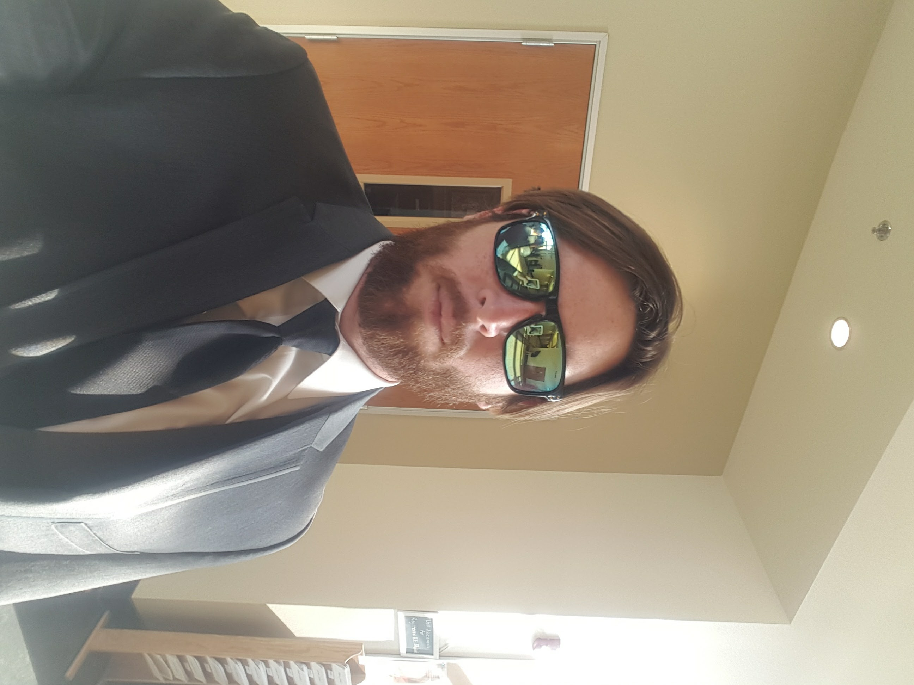

 I grew up in Bakersfield, California. When I was young, I had extreme flexibility in my joints (still do for some joints). My overprotective Mother decided I should not be allowed to play contact sports. For the better part of my young, life I developed my skills at swimming and learning.
Swimming and school provided the opportunity to leave my hometown. I went to college at the University of California, Santa Barbara. While attending UCSB, I qualified for the Olympic Trials, graduated with a degree in Economics, and added 30 years of age to my liver.
After graduating, I became an Ocean Lifeguard with Long Beach Fire Department. This made me realize I did not want to be a Lifeguard or any other type of public saftey employee. After the summer, I talked to my brother and we started our own corporation called ACTS Services.
The service we provided was to install solar panels on the roof of houses. Some time passed and I realized this daily grind wasn't for me.
Now I'm in this class figuring out how to build this webpage.
Thanks for reading!